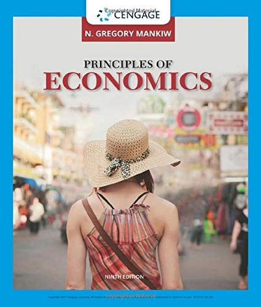

N·格里高利·曼昆（N. Gregory Mankiw）是哈佛大学经济学教授，2003年至2005年间曾担任美国总统经济顾问委员会（Council of Economic Advisers）主席，是当代最具影响力的经济学教育家之一。《经济学原理》（Principles of Economics）于1997年首次出版，由南方-西方/圣智学习出版社（South-Western/Cengage Learning）发行，此后多次修订再版，目前已出至第九版。这本教科书自问世以来便迅速成为全球使用最广泛的经济学入门教材，被翻译为二十多种语言，在世界各地数千所大学的经济学课程中被采用，影响了数以百万计的学生。
曼昆在全书开篇提出了著名的"经济学十大原理"，为整部教材奠定了概念基石。这十大原理分为三组：关于个人决策的原理——人们面临权衡取舍、某样东西的成本是为了得到它而放弃的东西（机会成本）、理性人考虑边际量、人们会对激励做出反应；关于人们如何相互影响的原理——贸易可以使每个人的状况都变得更好、市场通常是组织经济活动的一种好方法、政府有时可以改善市场结果；关于整体经济运行的原理——一国的生活水平取决于它生产商品与服务的能力、当政府发行了过多货币时物价上升、社会面临通货膨胀与失业之间的短期权衡取舍。曼昆以清晰而均衡的方式展开这些原理，既不偏向自由放任的立场，也不倾向政府干预主义，而是引导读者理解经济学家如何思考问题。
全书分为微观经济学和宏观经济学两大部分。微观部分涵盖供给与需求、消费者理论、生产者理论、市场结构（完全竞争、垄断、寡头、垄断竞争）、要素市场和市场失灵（外部性、公共物品、信息不对称）；宏观部分涵盖国民收入核算、经济增长、储蓄与投资、货币与银行体系、通货膨胀、开放经济的宏观经济学，以及短期经济波动与宏观经济政策。曼昆的写作风格以清晰著称——他善于用生活中的例子来解释抽象概念，每章都配有案例研究和"新闻摘录"，将理论与现实紧密联系；他的行文避免不必要的数学推导，让数学基础有限的读者也能跟上推理过程。
对于投资者和商业从业者而言，这本书的价值远超课堂教育。理解供给与需求如何决定价格、弹性如何影响企业定价策略、机会成本如何塑造资本配置决策、通货膨胀如何侵蚀购买力、利率如何影响投资与消费——这些经济学基本功是进行任何严肃投资分析的前提。曼昆的教材之所以持续畅销三十年，不仅因为它写得好，更因为它真正做到了将经济学的核心智慧——稀缺性、权衡取舍、激励、市场力量——以一种普通人可以理解和运用的方式呈现出来。无论是初学者建立经济学思维框架，还是有经验的从业者回顾基本原理，这本书都是一个可靠的起点。